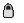
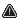

Workflow
Status and diffs
Status icons show whether tracks are locked, changed, matching disk, or externally changed.
| Status Icon | Meaning |
|---|---|
 |
Track is locked (read-only). |
 |
File is missing or has external differences. |
| Editor has unsaved differences. | |
| Editor matches file. |
Use Reload Selected Tracks to refresh source metadata, or Remove Selected Tracks to remove rows from the editor.
Diff Formatting
SwiftTag formats specific differences in tag fields, total-count fields, and picture browser rows. The color preferences live in Feedback settings. The on/off switches for each formatting class live in the Diff Tools window.
| Recognized Difference | Where It Appears | Formatting And Example Text | AppleScript |
|---|---|---|---|
| Track to File Diff | Album, title, core tag, and misc tag fields. |
Field value differs from the last file snapshot. Text uses
Track to File Diff Color and bold formatting.
Status hover can include lines like
TITLE: Original Title or GENRE: Rock.
|
format on track to file diff |
| Track to Track Diff | Selected-track tag fields when selected tracks disagree. |
Text uses Track to Track Diff Color with a tinted
background. Example: two selected tracks have different
ARTIST values, so Artist is marked as a track-to-track diff.
|
format on track to track diff |
| Externally Modified Diff | Fields and status icon after the source FLAC changes outside SwiftTag. |
Text uses Externally Modified Diff Color, bold, and italic.
Status hover can include FILENAME: <deleted>,
ALBUM: Live Set, or PICTURE: <different>.
|
format on externally modified diff |
| Track Total Mismatch | Total Tracks field. |
Text and background use Track/Disc Total Mismatch Color.
Hover text: Track count mismatch: one or more selected total-tracks
values do not match the current loaded track count.
|
format on track total mismatch |
| Disc Total Mismatch | Total Discs field. |
Text and background use Track/Disc Total Mismatch Color.
Hover text: Disc count mismatch: loaded tracks disagree on total
discs, or a disc number exceeds the maximum total discs value.
|
format on disc total mismatch |
| Duplicate Picture | Picture Browser slot list and picture overlay. |
Picture slot text uses Picture Status Overlay Color
and italic formatting. Overlay text can read
This picture is duplicated across types. Twin type(s): Back Cover.
|
format on duplicate picture |
Picture Status Text
Picture Browser can also show scope-related overlay text after selected-track
picture removal. Example:
Removed from selected tracks. Still visible because other tracks reference this picture. Re-pin to add it back.
Related: Save Changes, Feedback settings, Clean Up Album example.